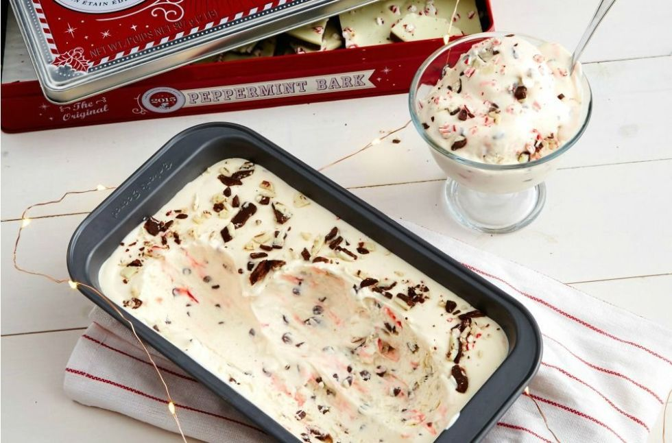

Peppermint Bark No-Churn Ice Cream
INGREDIENTS :
- 3 c. heavy cream
- 1 can sweetened condensed milk, 14 oz.
- 1 tsp. pure vanilla extract
- 4 miniature candy canes, crushed
- 2/3 c. peppermint bark, crumbled
- 1/2 c. miniature semisweet chocolate chip
METHOD :
- Beat heavy cream using an electric mixer until stiff peaks form, about 3 minutes. Stir in sweetened condensed milk and vanilla until thoroughly combined.
- Mix in candy cane pieces, mixing just enough so they start to leave pink streaks in the ice cream.
- Fold in peppermint bark and chocolate chips, setting aside a few to sprinkle on top of the ice cream. Pour the ice cream batter into a loaf pan, add remaining chips and bark, and place in the freezer until firm, about 6